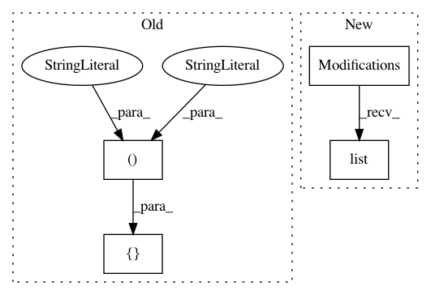

6379ad6fad9cd3c944390538faf945fdc8662b35,pyemma/_base/serialization/tests/_test_classes.py,test_cls_v3,test_cls_v3_1,#,39
Before Change
_serialize_interpolation_map = {1: [("set", "z", 42),
("mv", "a", "b"),
("rm", "x")],
2: [("set", "z", 23),
("mv", "b", "c"),
("rm", "y")]}
def __init__(self):
self.c = np.array([1, 2, 3])
After Change
_serialize_fields = ("c", "z")
_serialize_version = 3
// interpolate from version 1 and 2
_serialize_interpolation_map = {1: Modifications().set("z", 42).mv("a", "b").rm("x").list(),
2: Modifications().set("z", 23).mv("b", "c").rm("y").list()}
def __init__(self):
In pattern: SUPERPATTERN
Frequency: 3
Non-data size: 4
Instances
Project Name: markovmodel/PyEMMA
Commit Name: 6379ad6fad9cd3c944390538faf945fdc8662b35
Time: 2017-12-15
Author: m.scherer@fu-berlin.de
File Name: pyemma/_base/serialization/tests/_test_classes.py
Class Name: test_cls_v3
Method Name: test_cls_v3_1
Project Name: markovmodel/PyEMMA
Commit Name: 6379ad6fad9cd3c944390538faf945fdc8662b35
Time: 2017-12-15
Author: m.scherer@fu-berlin.de
File Name: pyemma/_base/serialization/tests/_test_classes.py
Class Name: test_cls_v2
Method Name: test_cls_v2_1
Project Name: markovmodel/PyEMMA
Commit Name: 6379ad6fad9cd3c944390538faf945fdc8662b35
Time: 2017-12-15
Author: m.scherer@fu-berlin.de
File Name: pyemma/_base/serialization/tests/_test_classes.py
Class Name: to_interpolate_with_functions
Method Name: to_interpolate_with_functions_1